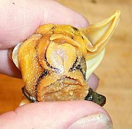
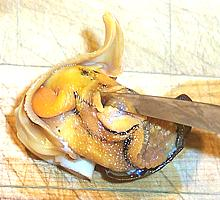

[Kelletia kelleti]
[Kelletia kelleti]

Removed from shell

Finding the mouth

Splitting the gut
Recipe Ready
- Let your whelks relax for a while, then check them to make sure they're alive. If you poke them they should respond by pulling tighter into their shells. Discard any dead ones and scrub the live ones under cold running water with a stiff brush to remove extraneous muck and miscellaneous sea life.
- Let the whelks relax while you boil up a big pot of salted water, then toss them in and bring it back up to a boil as quickly as possible. Once it's back to a boil let them cook for about 15 minutes.
- Cool the whelks in cold water until you can handle them easily. you can use any appropriate tool to get under the operculum (the hard door that closes after the snail) and pull it out of the shell. The whole snail may come out intact, or the edible part may break off leaving the rest in the shell. The photo to the left shows the complete contents of the shell but separated into edible (right) and inedible parts (left).
- Under cold running water wash out any gooky stuff. Rubbery stuff is all edible including siphons and that funny orange thing, but gooky parts are not.
- Find the whelk's mouth. It's right between two short tentacles. The photo shows the operculum below, the foot facing you and the mouth just above the foot. Now insert your filleting knife into the mouth sharp side up and split the gut open so you can wash out the last of the gooky stuff.
- Pull off the operculum and you should now have a nice clean and edible hunk of whelk. In general it's not so tough as to need pounding unless you want it extra tender.You can eat it immediately or freeze for later.
- Note: if everything didn't pull out of the shell but you want to keep the shell, fill it with water a couple of times and shake it vigorously mouth end down.